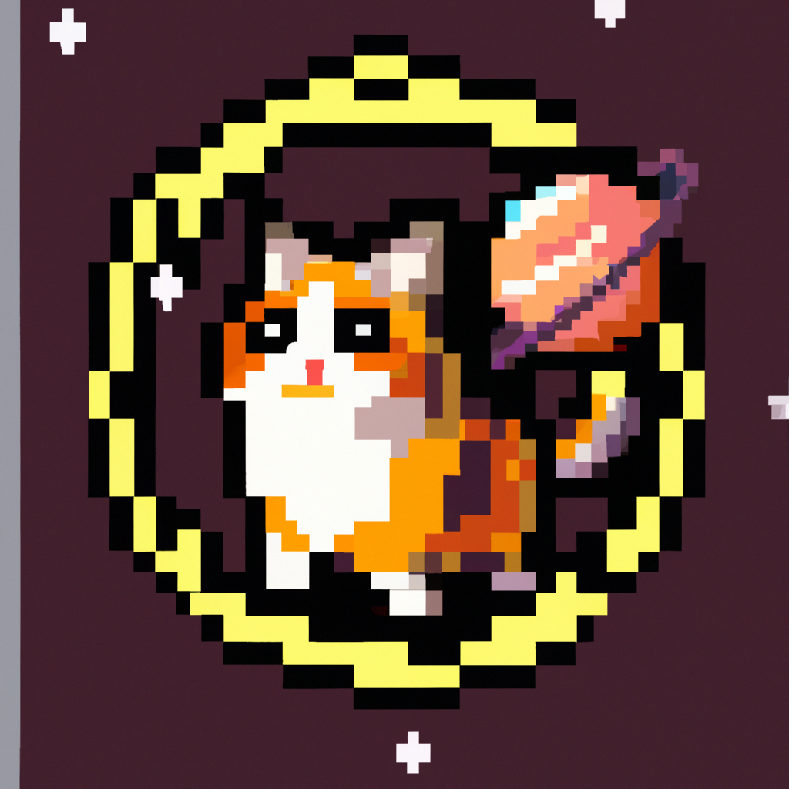

Cat universe
Welcome to "Cat Universe," the blog where I, Cat Astro, the space-faring feline, share my adventures as I explore the vast wonders of the universe. Join me as I embark on exciting journeys, visit different planets, and encounter all sorts of fascinating creatures along the way.
As a cat astronaut, I've had the privilege of traveling to distant galaxies, hopping from one planet to another in my trusty spaceship. But don't worry, I always make sure to bring my favorite toys and treats with me to make the journey more enjoyable!
In each blog post, I'll take you on a virtual tour of the places I visit, sharing my unique perspective as a curious and mischievous cat. You'll find firsthand accounts of my encounters with alien life forms, as well as stunning images captured by my specialized cat astronaut camera.
But it's not all about exploration and adventure! I also want to provide useful advice for fellow feline space enthusiasts who may be considering their own intergalactic travels. From tips on how to adapt to zero gravity to the best ways to communicate with extraterrestrial cats, I'll cover it all.
Of course, being a cat, I can't help but inject a little humor into my posts. Expect plenty of funny anecdotes and lighthearted observations along the way. After all, life is too short not to enjoy a good laugh, even in the vastness of space!
So, whether you're a cat lover, a space enthusiast, or simply someone looking for a unique and entertaining read, join me on this cosmic journey through "Cat Universe." Together, we'll explore the unknown, one purr at a time!